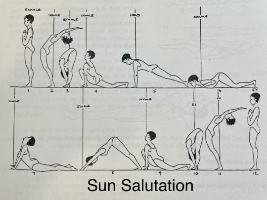

nunca é tarde demais

não sei se com todo mundo eh assim mas pra mim as vezes parece q por ter descumprido promessas q fiz a mim mesma quer dizer q acabou tudo e todas as chances foram pro ralo. embora eu saiba q isso é um exagero, o sentimento é real; a questão é que é pra isso q ele serve. essas emoções q formam essa especulação só serve pra te dar um choque de realidade e te ajuda a ser alg melhor. a vida é feita pra ter experiências merdas pra q vc molde o seu caráter e se martirizar por n ter feito x quando vc devia fazer é só uma maneira de provar q a vida tá aí pra isso, pra errar e aprender e por mais absurdo ou fim do mundo q tudo pareça, acredite 99% das vezes não é. é só a gente dando piti pq não olha pro quadro geral e sim só pro próprio umbigo. e tá tudo bem tamo aq pra aprender isso também.